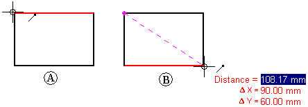
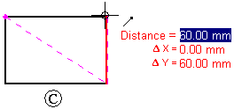
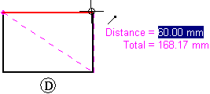
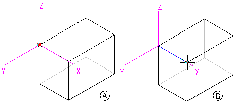
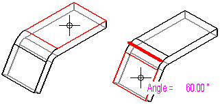
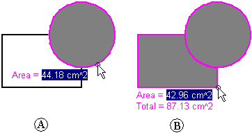

Distance and area measurement
You can measure distances or areas, even when you are in the middle of another task. To set the units for measuring distances or areas, use the Info tab→File Properties command on the File menu.
Measuring distances in 2D
In the Draft environment, you can measure distance using the Measure Distance command. These commands measure linear distances or measure the cumulative linear distance along a series of points. The first point you select establishes the origin of the measurement (A). After that, you can select any keypoint to see the distance between it and the origin, as well as the delta distance along each principal axis (B).

Selecting the keypoint adds it to a series of measurement points. Then you can select another point to see the new linear distance and deltas (C), or to see the distance between the last two points and the total cumulative distance from the origin to the last point (D). Use right-click to reset the command.


Measuring distances and angles in 3D
In the Part, Sheet Metal, and Assembly environments, the Measure Distance command measures linear distances. The first point you select establishes the origin of the measurement (A). After that, you can select any keypoint (B) to display the Measure Distance dialog box which displays the keypoint select type, the true distance, the apparent screen view distance, and the delta distance along each principal axis.

In the Part, Sheet Metal, and Assembly environments, the Measure Angle command measures angles. You can measure between any two faces or between any three points.

Measuring minimum distances
In the Part, Sheet Metal, and Assembly environments, you can use the Measure Minimum Distance command to measure the minimum distance between any two elements or keypoints. You can use the Select Type option on the Minimum Distance command bar to filter which type of elements you want to select.
Measuring normal distances
In the Part, Sheet Metal, and Assembly environments, the Measure Normal Distance command measures normal distances between a planar element or line and a keypoint. You can use the Element Types option on the Measure Normal Distance command bar to filter which type of elements you want to select. You can use the Key Point option to specify the type of keypoint you want to identify when measuring the distance. You can use the Coordinate System option to select a user-defined coordinate system to define one of the points. If you use a coordinate system, the returned values will be relative to the specified coordinate system.
Measuring areas
The Measure Area command, available only in the Draft environment and in 2D profiles and sketches, measures the area inside a closed boundary (A). You can also measure the cumulative area inside more than one closed boundary by holding the Shift key as you select elements (B). Each click displays the area of the last element along with the total area. You can reset the command by selecting another element without holding the Shift key.

Measuring lengths
The Measure Total Length command measures the cumulative length of a select set of 2D geometry.
Measuring automatically
In addition to the individual distance, area, length, and angle commands, you can use the Smart Measure command in 2D and 3D environments to measure automatically based on what you select:
-
Select a single 2D element or 3D object to measure its length or its angle or radius.
-
Select two or more 2D elements or 3D objects to measure the distance or angle between them.
The Smart Measure command works like the Smart Dimension command, except that it does not place a dimension as a result.
Copying measurement values
You can copy the highlighted measurement value to the Clipboard by pressing Ctrl+C. You can then use the copied value as input for another command. For example, you can paste the copied value into the Line command bar to define the length of a line. Use the Tab key if you want to highlight a different value.
Measuring drawing view geometry
When you measure model geometry within a drawing view, or when you measure distances between model edges in two drawing views, you can select the Use Drawing View Scale check box on the command bar to specify that the measured value is displayed using the equivalent of the model distance.
Alternatively, you can apply a user-defined scale value by selecting it from the Scale list on the command bar.
When measuring between drawing views, they must be views of the same model and they must use the same view rotation and orientation. For example, you can measure between an edge in a front view and an edge in a detail view with the same front orientation, but not between a front view and a side view.
-
You can show the scale of a drawing view using the General page (Drawing View Properties dialog box).
-
User-defined scale values are defined in the Drawing View Scales section of the Custom.xml file, in the C:\Program Files\Siemens\Solid Edge 2023\Preferences folder. See the Help topic, Add custom drawing view scales to Solid Edge.